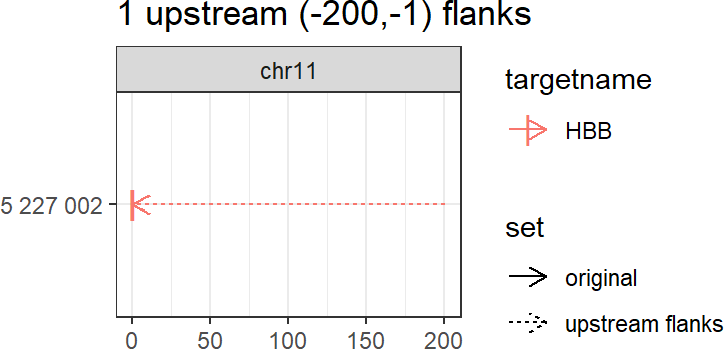
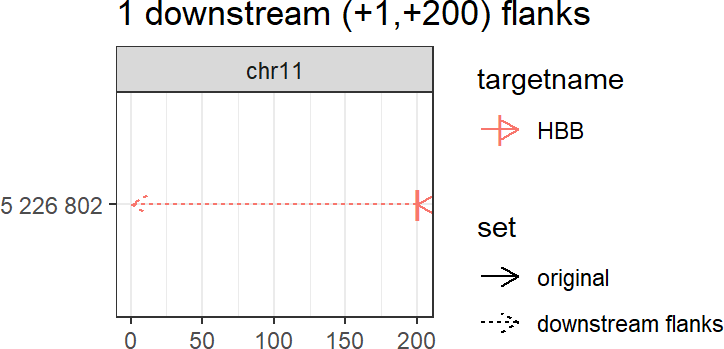

Using multicrispr for gRNA design
Aditya M Bhagwat
2020-04-23
designing_grna_libraries.RmdBackground
Crispr/Cas9 and Prime Editing
Crispr/Cas9 is a prokaryotic immune system turned into a genome engineering tool, with a Cas9/gRNA complex at the heart of its functioning. The gRNA (guide RNA) contains a 20 nucleotide (proto)spacer which guides the complex to a genomic locus with identical sequence, but only when followed by an NGG PAM (protospacer adjacent motif (see Figure 1A). The Cas9 enzyme performs some effector action at that locus: wildtype Cas9 cuts both strands after spacer nucleotide 17, Cas9Nickase cuts only a single strand (two variants exist, cutting respectively each of the strands), while catalytically dead dCas9, fused to some effector domain (KRAB, VPR, APEX) performs some alternative action (e.g. KRAB represses, VPR activates, APEX biotinylates).
Prime Editing extends this further, by coupling Cas9 to a Reverse Transcriptase (RT). As shown in Figure 1, the guide RNA is extended with a 3’ extension that contains primer binding site (binding a complementary DNA region that acts as a primer for reverse transcription) and reverse transcription template (the template used for reverse transcription). The spacer still acts as targeting agent, guiding the Cas9/RT complex to targeted genomic locus.

gRNAs for Crispr/Cas9 (A) and Prime Editing
Guide RNA design
Guide RNA design involves finding good guide RNAs to hit the targets of interest. Plasmids with guide RNA scaffolds, ready for cloning desired spacers into, can be readily ordered from AddGene. The actual task, therefore, boils down to finding good spacers for the targets of interest. For prime editing, it additionally involves finding appropriate primer binding site and reverse transcription template to edit the target site of interest.
A good spacer needs to fulfill two requirements.
-
Minimal off-target (mis)matches, so that only intended targets are hit.
- Crispr gRNAs can hit exact (with identical and alternate NGG pam), as well as (up-to 2) mismatch offtargets.
- Prime Editing is much more specific, hitting only exact offtargets.
Maximal on-target efficiency. Over the years, several sequence-to-efficiency prediction models have been developed, of which the Doench 2016 score has currently become the community standard. The score is not perfect, and examples can be found where the prediction and the actual outcome differ. Yet, to-date it is the best heuristic to predict on-target efficiency, worth making use of.
Multicrispr
Multicrispr was developed to make guide RNA design easier. As shown below, it contains functions to define and transform targets, find spacers, compute/add offtarget counts and efficiency scores (Doench 2016), and finally return all of this as a GRanges object.

Install
Installing multicrispr is simple:
url <- 'https://gitlab.gwdg.de/loosolab/software/multicrispr.git'
remotes::install_git(url, repos = BiocManager::repositories())Doench et al. (2016) ’s python package azimuth for on-target efficiency prediction using their method can be easily installed and activated using reticulate:
# Install - run R(Studio) with admin privileges for this to work!
reticulate::conda_create('azienv', 'python=2.7')
reticulate::conda_install('azienv', 'azimuth', pip = TRUE)
reticulate::conda_install('azienv', 'scikit-learn==0.17.1', pip = TRUE)Bowtie-indexed genomes for quick offtarget analysis can be installed using index_genome. For the two genomes used in the examples, mm10 and hg38, the functions downloads pre-build indexes from our data server, allowing a quick exploration (set download=FALSE to build index anew):
Define targets

bed_to_granges converts a (0-based) BED coordinate file into a (1-based) GRanges.
An example is loading the 1974 binding sites of the transcription factor SRF:
require(magrittr)
## Lade nötiges Paket: magrittr
require(multicrispr)
## Lade nötiges Paket: multicrispr
bedfile <- system.file('extdata/SRF.bed', package = 'multicrispr')
tfbs0 <- bed_to_granges(bedfile, genome = 'mm10')
## Read SRF.bed into GRanges
## 1974 ranges on 21 chromosomes
genes_to_granges and genefile_to_granges convert entrez/ensembl gene identifiers into GRanges using txdb gene models. An example that loads of a small subset of the 1974 SRF binding sites:
require(multicrispr)
entrezfile <- system.file('extdata/SRF.entrez', package = 'multicrispr')
txdb <- TxDb.Mmusculus.UCSC.mm10.knownGene::TxDb.Mmusculus.UCSC.mm10.knownGene
sometfbs0 <- genefile_to_granges(entrezfile, txdb, complement = TRUE)
## Convert 10 genes to 10 GRanges
## 20 ranges after adding inverse strands
char_to_granges uses a 1-based coordinate vector to specify the GRanges.
It can be used to define four prime editing sites mentioned by Anzalone et al. (2019):
# char_to_granges: Anzalone et al. (2019) prime editing targets
bsgenome <- BSgenome.Hsapiens.UCSC.hg38::BSgenome.Hsapiens.UCSC.hg38
pe0 <- char_to_granges(c(HBB = 'chr11:5227002:-'), bsgenome)
plot_intervals(pe0)
Transform targets

As a second step, the original targets may require transformation. The functions extend, up_flank (upstream flanks), down_flank (downstream flanks), and double_flank (double flanks) can be used to update the target ranges as required.



# Double flank
invisible(double_flank(targets, -200, -1, +1, +200, plot = TRUE))
## 2 flank ranges: 1 up + 1 down
Find spacers

The next step is to find N20 spacers followed by NGG pam sites. This can be done with find_spacers, after extending target range(s) to prime editing neighbourhood(s):
bsgenome <- BSgenome.Hsapiens.UCSC.hg38::BSgenome.Hsapiens.UCSC.hg38
neighbourhood <- extend_for_pe(targets, bsgenome)
spacers <- find_spacers(neighbourhood, bsgenome, complement = FALSE)
For prime editing, however, it is better to use find_pe_spacers, which performs target to neighbourhood extension implicitly, and also adds 3’ extension (Fig 1) to returned spacer GRanges.

This finds prime editing sites that follow Anzalone et al. (2019)’s recommended default settings: a 13-nucleotide primer and a 16-nucleotide reverse transcription template. These settings can be easily altered (e.g. Anzalone et al. report success with reverse transcription templates of up to 48 nucleotides) by:

Add offtargets

if (has_been_indexed(bsgenome)){
spacers %<>% add_offtargets(bsgenome, mismatch = 0, plot = TRUE)
}
## Add genome counts
## Expand iupac ambiguities in pam
## Write reads to ~/multicrisprout/spacers.fa
## Map reads: ~/multicrisprout/spacers/spacers_to_BSgenome.Hsapiens.UCSC.hg38.txt
## Load results
## Count matches
## Calculate offtargets for 6 spacers
Add efficiency

Not all N20NGG gRNA sequences target equally well (even when matching sequence perfectly). For each position in the 23-bp gRNA sequence, the nucleotide present in current, previous and next position has an effect on targeting efficiency. The current community standard for on-target efficiency prediction is that of Doench et al. (2016), which can be computed and added with add_efficiency:
if (reticulate::py_module_available('azimuth')){
spacers %<>% add_efficiency(bsgenome, 'Doench2016')
}
## Score crispr spacers
## Add (4-23-3) contextseqs
## Score contextseqs with Doench2016 (azimuth)
## Run Doench2016 1 times on 10000-seq chunks to preserve memory
## No model file specified, using V3_model_nopos
## Completed in 1.1 secs
Return spacer GRanges
spacers
## GRanges object with 6 ranges and 14 metadata columns:
## seqnames ranges strand | crisprcontext
## <Rle> <IRanges> <Rle> | <character>
## HBB_1 chr11 5226958-5226977 + | TCATCCACGTTCACCTTGCCCCACAGGGCA
## HBB_2 chr11 5226959-5226978 + | CATCCACGTTCACCTTGCCCCACAGGGCAG
## HBB_3 chr11 5226968-5226987 + | TCACCTTGCCCCACAGGGCAGTAACGGCAG
## HBB_4 chr11 5227003-5227022 - | ACACCATGGTGCATCTGACTCCTGAGGAGA
## HBB_5 chr11 5226984-5227003 + | GGCAGTAACGGCAGACTTCTCCTCAGGAGT
## HBB_6 chr11 5227021-5227040 - | ACTAGCAACCTCAAACAGACACCATGGTGC
## targetname targetstart targetend crisprname crisprspacer
## <character> <integer> <integer> <character> <character>
## HBB_1 HBB 5227002 5227002 HBB_1 CCACGTTCACCTTGCCCCAC
## HBB_2 HBB 5227002 5227002 HBB_2 CACGTTCACCTTGCCCCACA
## HBB_3 HBB 5227002 5227002 HBB_3 CTTGCCCCACAGGGCAGTAA
## HBB_4 HBB 5227002 5227002 HBB_4 CATGGTGCATCTGACTCCTG
## HBB_5 HBB 5227002 5227002 HBB_5 GTAACGGCAGACTTCTCCTC
## HBB_6 HBB 5227002 5227002 HBB_6 GCAACCTCAAACAGACACCA
## crisprpam primer
## <character> <character>
## HBB_1 AGG GTTCACCTTGCCC
## HBB_2 GGG TTCACCTTGCCCC
## HBB_3 CGG CCCCACAGGGCAG
## HBB_4 AGG GTGCATCTGACTC
## HBB_5 AGG CGGCAGACTTCTC
## HBB_6 TGG CCTCAAACAGACA
## revtranscript
## <character>
## HBB_1 CACAGGGCAGTAACGGCAGACTTCTCCTCAGGAGTCAGATGCACCATG
## HBB_2 ACAGGGCAGTAACGGCAGACTTCTCCTCAGGAGTCAGATGCACCATGG
## HBB_3 TAACGGCAGACTTCTCCTCAGGAGTCAGATGCACCATGGTGTCTGTTT
## HBB_4 CTGAGGAGAAGTCTGCCGTTACTGCCCTGTGGGGCAAGGTGAACGTGG
## HBB_5 CTCAGGAGTCAGATGCACCATGGTGTCTGTTTGAGGTTGCTAGTGAAC
## HBB_6 CCATGGTGCATCTGACTCCTGAGGAGAAGTCTGCCGTTACTGCCCTGT
## extension G0
## <character> <integer>
## HBB_1 CATGGTGCATCTGACTCCTGAGGAGAAGTCTGCCGTTACTGCCCTGTGGGGCAAGGTGAAC 1
## HBB_2 CCATGGTGCATCTGACTCCTGAGGAGAAGTCTGCCGTTACTGCCCTGTGGGGCAAGGTGAA 1
## HBB_3 AAACAGACACCATGGTGCATCTGACTCCTGAGGAGAAGTCTGCCGTTACTGCCCTGTGGGG 1
## HBB_4 CCACGTTCACCTTGCCCCACAGGGCAGTAACGGCAGACTTCTCCTCAGGAGTCAGATGCAC 2
## HBB_5 GTTCACTAGCAACCTCAAACAGACACCATGGTGCATCTGACTCCTGAGGAGAAGTCTGCCG 1
## HBB_6 ACAGGGCAGTAACGGCAGACTTCTCCTCAGGAGTCAGATGCACCATGGTGTCTGTTTGAGG 2
## off off0 Doench2016
## <numeric> <numeric> <numeric>
## HBB_1 0 0 0.462600534483403
## HBB_2 0 0 0.611140169152868
## HBB_3 0 0 0.485226524206282
## HBB_4 1 1 0.666241339730174
## HBB_5 0 0 0.517610901468318
## HBB_6 1 1 0.68921726226521
## -------
## seqinfo: 455 sequences (1 circular) from hg38 genome